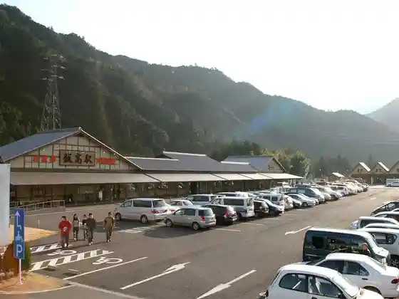
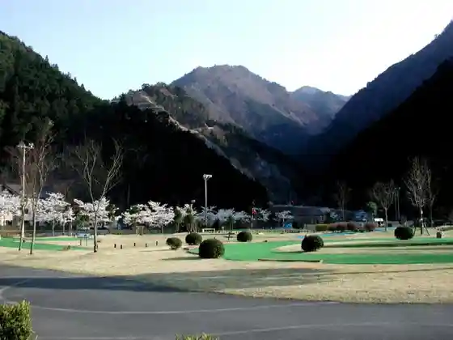
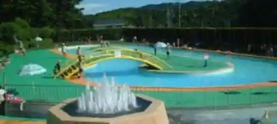
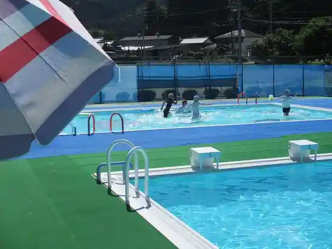

Roadside Station Iidaka Eki
Matsusaka, Mie · 0598-46-1111 · Official / source link

Oku Kaori Hada Kyo Kenko no Mori Patagorufu
Matsusaka, Mie · 0598-45-0504 · Official / source link

Matsusaka Ryusui Puru
Matsusaka, Mie · 0598-26-5796 · Official / source link

Matsusaka Iidaka B&G Kaiyo Center
Matsusaka, Mie · 0598-45-0471 · Official / source link

Matsusaka Nogyo Koen Beru Farm
Matsusaka, Mie · 0598-63-0050 · Official / source link
Matsu Naze Beach
Matsusaka, Mie · 0598-23-7771 · Official / source link
Ebagureizu Kaori Hada Kyo
Matsusaka, Mie · Official / source link
I Village Ya Megururu no Sato Saisui Ba
Matsusaka, Mie · 050-1781-3699 · Official / source link
Fujimigahara
Matsusaka, Mie · 0598-32-2511 · Official / source link
Harutani Tera no Edohigan Sakura
Matsusaka, Mie · 0598-32-2511 · Official / source link
Mibu Yama
Matsusaka, Mie · 0598-46-7111 · Official / source link
Roadside Station (Cha Kura Eki)
Matsusaka, Mie · 0598-32-2555 · Official / source link
Mie Fenikkusugorufukosu
Matsusaka, Mie · 0598-43-2333 · Official / source link
Matsusaka Castle Ruins (Matsusaka Park)
Matsusaka, Mie · 0598-23-7771 · Official / source link
Kiyomitsu Tera
Matsusaka, Mie · 0598-21-0434 · Official / source link
O Joban Residence
Matsusaka, Mie · 0598-26-5174 · Official / source link
Toko Yama Shrine Tera
Matsusaka, Mie · 0598-43-2228 · Official / source link
Kamiyama Ichijoji
Matsusaka, Mie · Official / source link
Roadside Station Iidaka Eki (Kaori Hada Kyo Onsen Iitaka Baths)
Matsusaka, Mie · 0598-46-1114 · Official / source link
Tsukimoto Oiwake (Joya Tomoshibi)
Matsusaka, Mie · 0598-53-4393 · Official / source link
Chin Nuno Toge
Matsusaka, Mie · 0598-46-1111 · Official / source link
Matsusaka Momenkimo no Rentaru Center
Matsusaka, Mie · 0598-21-0551 · Official / source link
Machi no Eki Tanumise Natto Workshop
Matsusaka, Mie · 0598-21-2096 · Official / source link
Karasu Gaku
Matsusaka, Mie · 0598-32-2511 · Official / source link
Kaori Hada Kyo
Matsusaka, Mie · 0598-32-2511 · Official / source link
Matsusaka Chubu Dai Sports Park no Oga Hasu
Matsusaka, Mie · 0598-26-7155 · Official / source link
Matsusaka Bunkazai Center (Haniwa Kan)
Matsusaka, Mie · 0598-26-7330 · Official / source link
Matsusaka Eki Kankojoho Center
Matsusaka, Mie · 0598-23-7771 · Official / source link
Roadside Station Iidaka Eki Shimaiten (Namise Eki)
Matsusaka, Mie · 0598-47-0828 · Official / source link
Ukisatomura
Matsusaka, Mie · 0598-35-0201 · Official / source link
Matsusaka Momen Teori Ri Center
Matsusaka, Mie · 0598-26-6355 · Official / source link
Toko Yama Shrine Tera Morimoto Joshi (E Tenjo)
Matsusaka, Mie · 0598-43-2228 · Official / source link
Tsutsuji no Sato Ko Taki
Matsusaka, Mie · 0598-46-0166 · Official / source link
Tenkai Yama Yasushi Un Tera
Matsusaka, Mie · 0598-47-0727 · Official / source link
Motori Norinaga Kyutaku (Suzunoya)
Matsusaka, Mie · 0598-21-0312 · Official / source link
Motori Norinaga Taku Ato
Matsusaka, Mie · 0598-53-4397 · Official / source link
Motori Norinaga no Miya
Matsusaka, Mie · 0598-21-6566 · Official / source link
Motori Norinaga Memorial Museum
Matsusaka, Mie · 0598-21-0312 · Official / source link
Matsusaka Kantorii Club
Matsusaka, Mie · 0598-29-2911 · Official / source link
Mie Prefectural Miekodomo no Shiro
Matsusaka, Mie · 0598-23-7735 · Official / source link
Heki Kawa (Aokawa) no Hamabo Gunsei Chi
Matsusaka, Mie · 0598-56-7905 · Official / source link
Matsu Naze Fisshingu Park
Matsusaka, Mie · 0598-59-0233 · Official / source link
Matsusaka Sogo Sports Park Su Ga to Park
Matsusaka, Mie · 0598-28-6757 · Official / source link
Matsusaka Kyanpingu Park
Matsusaka, Mie · 0598-67-4603 · Official / source link
Gosho no Machi Matsusaka Kanko Koryu Center
Matsusaka, Mie · 0598-25-6565 · Official / source link
JA Mienaka Kissuru Kurobe
Matsusaka, Mie · 0598-59-0538 · Official / source link
Kyokugagaku
Matsusaka, Mie · 0598-46-7111 · Official / source link
Nameri Mizumi
Matsusaka, Mie · 0598-48-3804 · Official / source link
Kyu Ozu Seizaemon Ie
Matsusaka, Mie · 0598-21-4331 · Official / source link
Kyu Hasegawa Jiro Be Ie
Matsusaka, Mie · 0598-21-8600 · Official / source link
Mitsui Ie Hassho no Chi
Matsusaka, Mie · 0598-23-7771 · Official / source link
Kayumi Ijiri Iseki (Nihonsaiko no Dogu)
Matsusaka, Mie · 0598-32-2511 · Official / source link
Matsusaka Shrine
Matsusaka, Mie · 0598-23-7771 · Official / source link
JA Mienaka Local History Museum
Matsusaka, Mie · 0598-28-8822 · Official / source link
Hori Men Jizo
Matsusaka, Mie · Official / source link
Matsusaka Forest Park
Matsusaka, Mie · 0598-58-0040 · Official / source link
Matsura Takeshiro Memorial Museum
Matsusaka, Mie · 0598-56-6847 · Official / source link
Namise Botanical Garden
Matsusaka, Mie · 0598-47-0808 · Official / source link
Namise Eki
Matsusaka, Mie · 0598-47-0828 · Official / source link
Harada Jiro Kyutaku
Matsusaka, Mie · 0598-23-1656 · Official / source link
Matsusaka Ritsu Folk History Museum (2 Kai Ozu Yasujiro Matsusaka Memorial Museum)
Matsusaka, Mie · 0598-23-2381 · Official / source link
Iseyama Ue Meshi Fukuda Tera
Matsusaka, Mie · 0598-35-0004 · Official / source link
Nippon Tanada Hyakusen (Fukano no Dandan Ta)
Matsusaka, Mie · 0598-32-2511 · Official / source link
Omotenashi Tokoro (Yume Kyuan)
Matsusaka, Mie · 0598-21-1578 · Official / source link
Market Sho no Machinami
Matsusaka, Mie · 0598-56-7916 · Official / source link
Mino Ta Chikurin Kaido
Matsusaka, Mie · Official / source link
Mizuya Shrine no Ogusu
Matsusaka, Mie · 0598-46-0932 · Official / source link
Oishi Fudo In Mukaderan Gunraku
Matsusaka, Mie · 0598-23-7771 · Official / source link
Asaka Castle Ruins (Hakumai Castle Ruins)
Matsusaka, Mie · 0598-23-7771 · Official / source link
Zen Yama
Matsusaka, Mie · 0598-48-3804 · Official / source link
Matsugashima Castle Ruins
Matsusaka, Mie · 0598-23-7771 · Official / source link
Ki Kaji Mitaki
Matsusaka, Mie · 0598-46-7111 · Official / source link
Takami Yama
Matsusaka, Mie · 0598-46-7111 · Official / source link
Shirai Yama
Matsusaka, Mie · 0598-32-2511 · Official / source link
Tenpaku Iseki
Matsusaka, Mie · 0598-48-3821 · Official / source link
Okochi Castle Ruins
Matsusaka, Mie · 0598-23-7771 · Official / source link
Horisaka Yama
Matsusaka, Mie · 0598-23-7771 · Official / source link
Chubu Dai Sports Park
Matsusaka, Mie · 0598-26-1472 · Official / source link
Kanebo Ato Park (Suzu no Mori Park)
Matsusaka, Mie · 0598-53-4167 · Official / source link
Gosho Pogatto Park
Matsusaka, Mie · Official / source link
Matsu Naze Coast
Matsusaka, Mie · 0598-23-7771 · Official / source link
Mino Ta Great Buddha (Makoto Raku Tera)
Matsusaka, Mie · 0598-58-2616 · Official / source link
Utsukushiya Higashi Village Gofuku Mise
Matsusaka, Mie · 0598-21-0220 · Official / source link
Isejidoshado (Ureshino Parking Area) Kudari Sen
Matsusaka, Mie · 0598-42-6570 · Official / source link
Isejidoshado (Ureshino Parking Area) Nobori Sen
Matsusaka, Mie · 0598-42-4640 · Official / source link
Motori Norinaga Oku Haka
Matsusaka, Mie · 0598-29-1210 · Official / source link
Matsura Takeshiro Tanjo Chi
Matsusaka, Mie · 0598-56-6847 · Official / source link
Takarazuka Kofun Park
Matsusaka, Mie · 0598-26-7330 · Official / source link
Taka Soku Ike
Matsusaka, Mie · 0598-32-2511 · Official / source link
Kokubun Ie
Matsusaka, Mie · 0598-23-7771 · Official / source link
Kajii Motojiro Bungaku Hi
Matsusaka, Mie · 0598-53-4393 · Official / source link
Chitose Forest
Matsusaka, Mie · Official / source link
Miya no Tani Gorge
Matsusaka, Mie · 0598-46-7111 · Official / source link
Shinpukuji
Matsusaka, Mie · 0598-53-4397 · Official / source link
O Kumagaike
Matsusaka, Mie · 0598-46-7111 · Official / source link
Matsusaka Iinan Washi Wagyu Center
Matsusaka, Mie · 0598-32-2004 · Official / source link
Asada Tera
Matsusaka, Mie · 0598-51-8661 · Official / source link
Isawa Bunko (Takekawa Ie)
Matsusaka, Mie · 0598-23-7771 · Official / source link
Heike Roku Dai no Haka
Matsusaka, Mie · 0598-48-3804 · Official / source link
Komyo Tera
Matsusaka, Mie · 0598-21-5792 · Official / source link
Ureshino Koko Kan
Matsusaka, Mie · 0598-42-7000 · Official / source link
Oka Terayama Kei Matsu Tera
Matsusaka, Mie · 0598-21-0965 · Official / source link
Hodo Yama Ki Takashi Tera
Matsusaka, Mie · 0598-23-9680 · Official / source link
Atago Yama Ryusen Tera
Matsusaka, Mie · 0598-21-2931 · Official / source link
Ko Taki Fudo Mikoto
Matsusaka, Mie · 0598-46-0166 · Official / source link
Oishi Fudo In
Matsusaka, Mie · 0598-34-0180 · Official / source link
Gesshutsu no Chuo Kozosen
Matsusaka, Mie · 0598-46-7121 · Official / source link
Matsusaka Bunkazai Center (Kyu Kanebo Menshi Matsusaka Kojo Menshi Soko)
Matsusaka, Mie · 0598-53-4393 · Official / source link
Esukarugo Ranch
Matsusaka, Mie · 0598-21-6417 · Official / source link
Mokuichi Shinrin Art Museum
Matsusaka, Mie · 0598-46-1991 · Official / source link
Yakushiji
Matsusaka, Mie · 0598-48-3821 · Official / source link
San Park Ren (San Park Boringu Ba)
Matsusaka, Mie · 0598-26-5661 · Official / source link
Ichigo Ya Kurobe
Matsusaka, Mie · 0598-59-1539 · Official / source link
Kubo Burial Mound
Matsusaka, Mie · 0598-53-4393 · Official / source link
Kazaori Taki
Matsusaka, Mie · 0598-46-7111 · Official / source link
Ema Koya Gorge
Matsusaka, Mie · 0598-46-7111 · Official / source link
Kunimi Yama
Matsusaka, Mie · 0598-46-7111 · Official / source link
Hen Bu Iseki
Matsusaka, Mie · 0598-42-4388 · Official / source link
Dono Town (Kyu Doshin Town)
Matsusaka, Mie · 0598-53-4406 · Official / source link
Sakana Town Tori
Matsusaka, Mie · 0598-53-4406 · Official / source link
Onoe Joya Tomoshibi
Matsusaka, Mie · 0598-56-7905 · Official / source link
Ozu Joya Tomoshibi
Matsusaka, Mie · 0598-56-7916 · Official / source link
Shibi (Kama Ikuta Tsuji Kakiuchi Kawaragama Ato Shutsudo)
Matsusaka, Mie · 0598-48-3821 · Official / source link
Io Tera (Hokyo Into)
Matsusaka, Mie · 0598-32-2300 · Official / source link
Kayumi Shrine
Matsusaka, Mie · 0598-32-2511 · Official / source link
Myojin Taira
Matsusaka, Mie · 0598-46-7111 · Official / source link
Myoraku Tera
Matsusaka, Mie · 0598-29-1210 · Official / source link
Isa Wa Shrine
Matsusaka, Mie · 0598-53-4397 · Official / source link